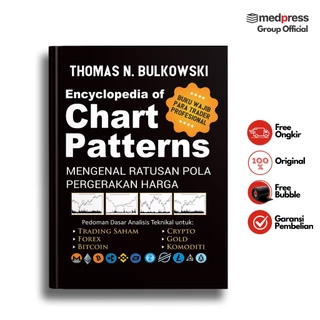
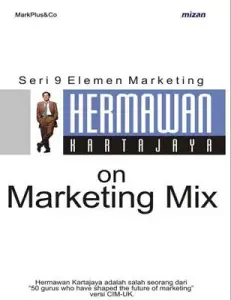
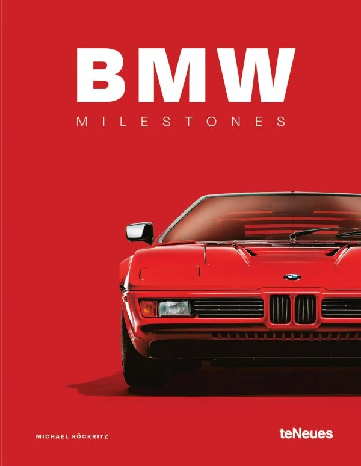
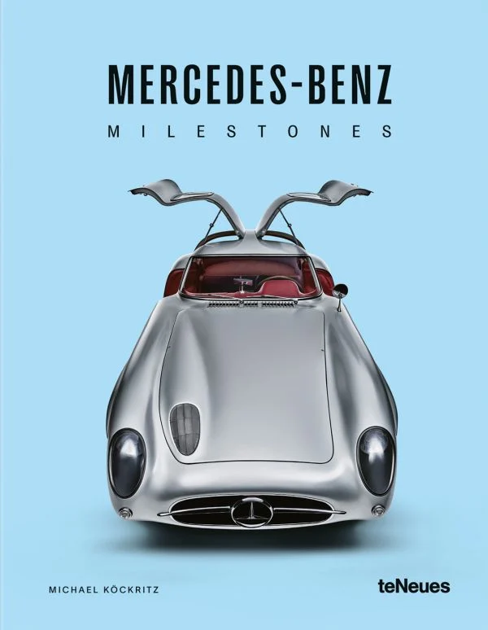
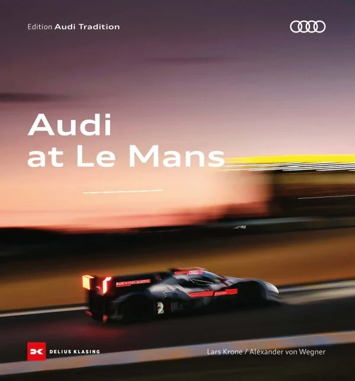

100 YEARS OF LEMANS LEGENDS
Rp.75.000
Bantu si kecil mengenal dunia dengan cara yang seru! Buku ini dirancang khusus untuk anak usia 1-3 tahun dengan ilustrasi warna-warni yang menarik perhatian dan teks sederhana yang mudah diingat.

"MAN JADDA WAJADA"
Rp55.000
Latih rasa ingin tahu si kecil dengan petualangan yang seru! Di usia 4-5 tahun, anak-anak sedang semangat-semangatnya belajar hal baru. Buku ini dirancang khusus dengan kalimat sederhana dan ilustrasi penuh warna yang akan membuat mereka betah berlama-lama membaca.

A TOUR GUIDE FOR ALL TRADERS
Rp85.000
Apakah Bunda sedang mencari cara agar si kecil tidak kecanduan gadget? Buku ini adalah solusinya! Pada usia emas (golden age), membacakan cerita adalah cara terbaik untuk melatih fokus dan kemampuan bahasa anak.

ENCYLOPEDIA OF MARKETING TECHNIQUES
Rp75.000
Ajak mereka berkelana mengenal [Sebutkan tema buku, misal: dunia hewan/pertemanan/alam]. Tidak hanya membaca, Bunda juga sedang membangun ikatan batin yang kuat dengan mereka. Dukung tumbuh kembangnya, jauhkan dari layar, dan buka dunia baru lewat buku ini.
FORMULA 1 AND ITS HISTORY
9.000
Memasuki usia 6-7 tahun adalah masa transisi yang seru dari melihat gambar ke mulai merangkai kata. Buku ini dirancang khusus dengan kalimat yang sederhana namun tetap imajinatif untuk melatih kepercayaan diri si kecil.

BMW MILESTONE
909.000
Buku BMW Milestone menelusuri tonggak-tonggak terpenting dalam sejarah BMW—mulai dari inovasi mesin, desain ikonik, hingga lahirnya lini performa tinggi yang mendefinisikan Sheer Driving Pleasure. Setiap bab menyoroti model dan teknologi yang menjadi titik balik, menjadikan buku ini referensi ideal bagi pecinta otomotif dan penggemar BMW.

MERCEDES_BENS MILESTONE
971.000
Mercedes Milestone mengangkat perjalanan Mercedes-Benz sebagai pelopor dunia otomotif, dari mobil pertama di dunia hingga standar kemewahan dan keselamatan modern. Buku ini menggambarkan bagaimana filosofi “The Best or Nothing” diwujudkan melalui rekayasa presisi, desain elegan, dan inovasi berkelanjutan yang membentuk industri otomotif global.

AUDI AT LEMANS
571.000
Buku Audi at Le Mans mengisahkan dominasi dan inovasi Audi dalam ajang balap ketahanan paling legendaris di dunia. Dari mesin revolusioner hingga teknologi hybrid, buku ini menunjukkan bagaimana Le Mans menjadi laboratorium teknologi Audi, sekaligus panggung pembuktian filosofi Vorsprung durch Technik melalui kerja tim, strategi, dan daya tahan ekstrem.

F-5 TIGER: SIMPLICITY, AGILITY, AND GLOBAL IMPACT
123.000
Buku ini mengulas F-5 Tiger sebagai salah satu pesawat tempur ringan paling berpengaruh di dunia. Dengan desain sederhana namun efektif, F-5 menjadi simbol keseimbangan antara kelincahan, keandalan, dan efisiensi biaya. Dibahas dari sisi sejarah pengembangan, filosofi desain Northrop, hingga peran globalnya di berbagai angkatan udara, buku ini cocok bagi pelajar, penggemar aviasi, dan pembaca yang tertarik pada evolusi pesawat tempur modern.

SU-57 FELON: RUSSIA’S FIFTH-GENERATION FIGHTER VISION
183.000
Buku ini membahas Su-57 Felon sebagai representasi ambisi Rusia dalam era pesawat tempur generasi kelima. Dengan fokus pada konsep stealth, super-maneuverability, dan integrasi teknologi modern, pembaca diajak memahami pendekatan desain Sukhoi serta posisi Su-57 dalam lanskap aviasi militer global. Disajikan secara konseptual dan historis, buku ini memberikan gambaran komprehensif tanpa masuk ke detail operasional.